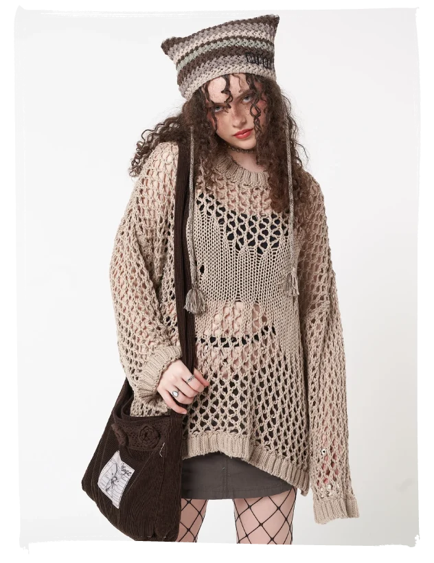
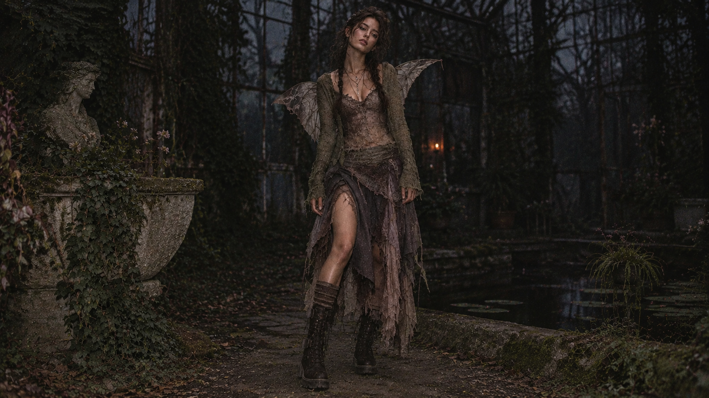
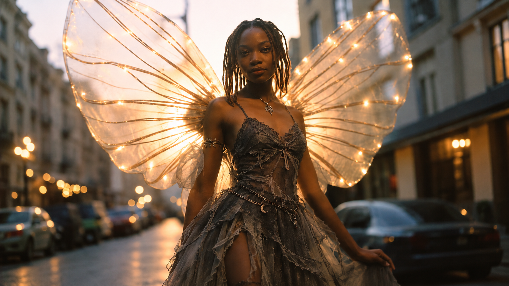
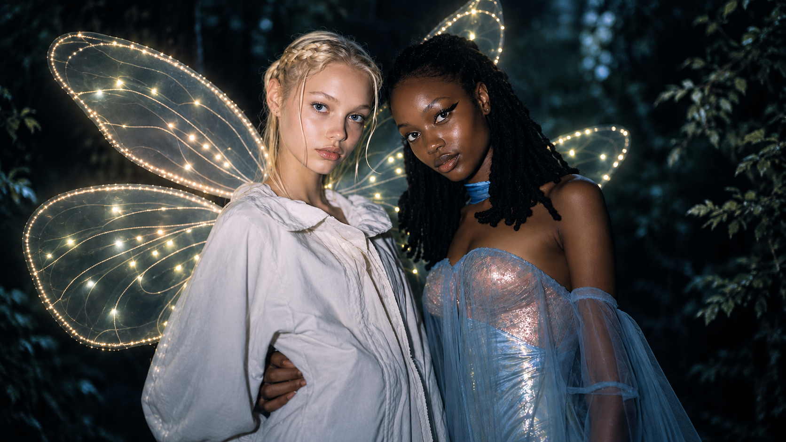
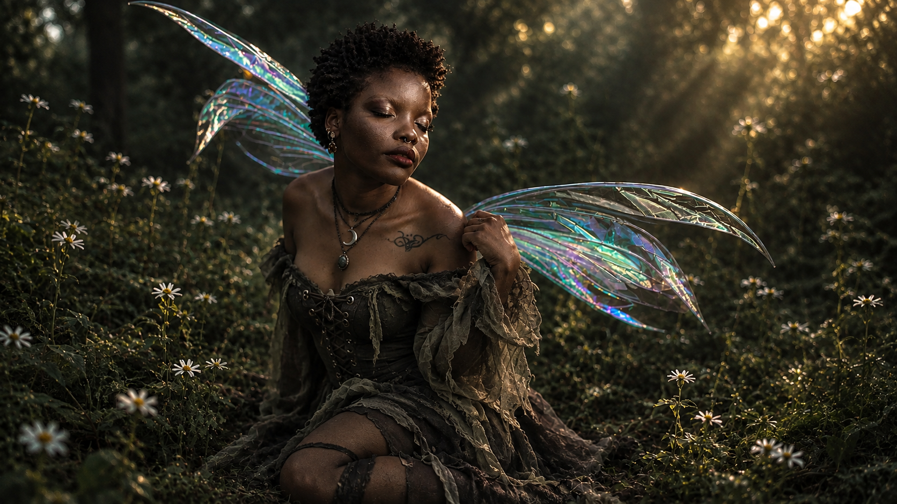
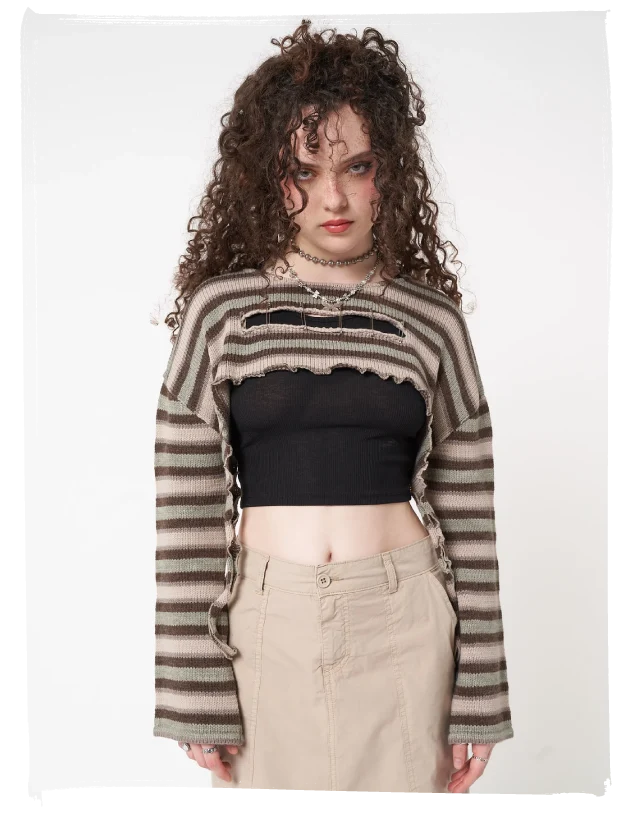
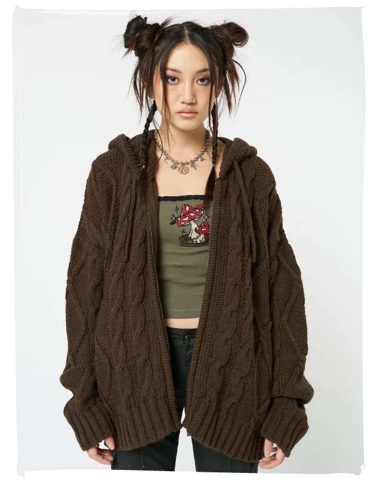
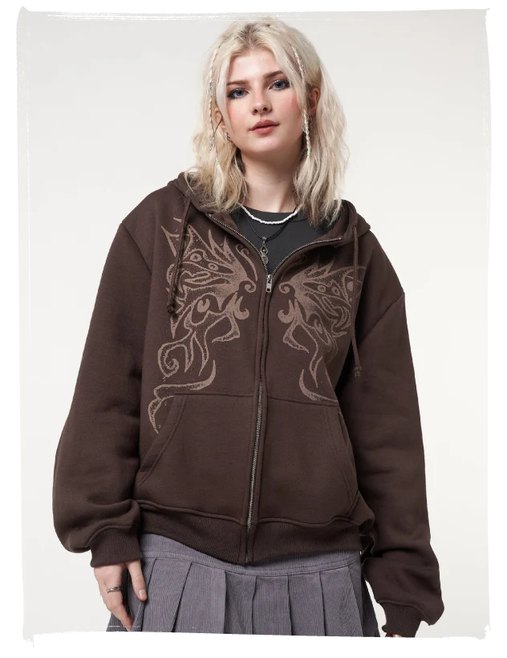

Blusa Sostenible
45.00 €





45.00 €

55.00 €

40.00 €

60.00 €
Experimenta el movimiento de Jardin des Larmes a través de nuestro corto. Nuestro viaje recogido en un vídeo donde el camino que hemos recorrido trae a la vida el espíritu artístico, romántico y ecológico detrás de cada colección. Contempla como nuestro diseño se inspira en el estilo gótico y cuenta historias de individualidad, fuerza, rebeldía y sostenibilidad.
Tip: scroll to feel it